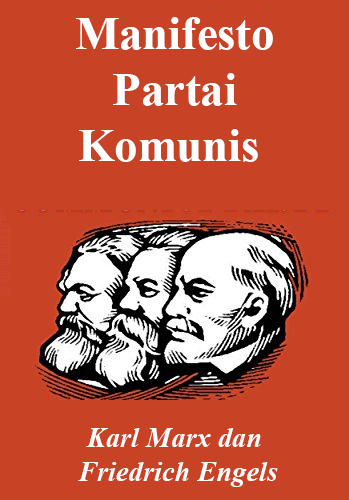

Kembali Ingin berkontribusi? Sumbangkan hasil terjemahan, pamflet, atau tulisanmu ke: Total.Liberation161@proton.meMinimanual of the Urban Guerillia oleh Carlos Marighella Untuk lebih lanjut, silahkan kunjungi link berikut Minimanual of the Urban Guerillia
The Economics of Freedom oleh Solfed.UK Untuk lebih lanjut, silahkan kunjungi link berikut The Economics of Freedom

Manifesto Partai Komunis oleh Karl Marx dan Friedrich Engels Untuk lebih lanjut, silahkan kunjungi link berikut Manifesto Partai Komunis
Conquest of Bread oleh Peter Kropotkin Untuk lebih lanjut, silahkan kunjungi link berikut Conquest of Bread